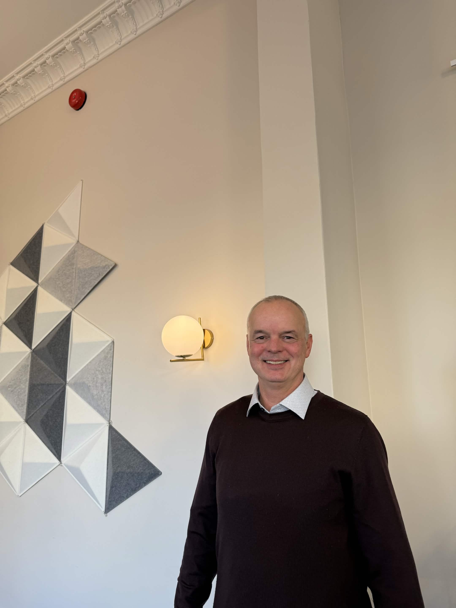
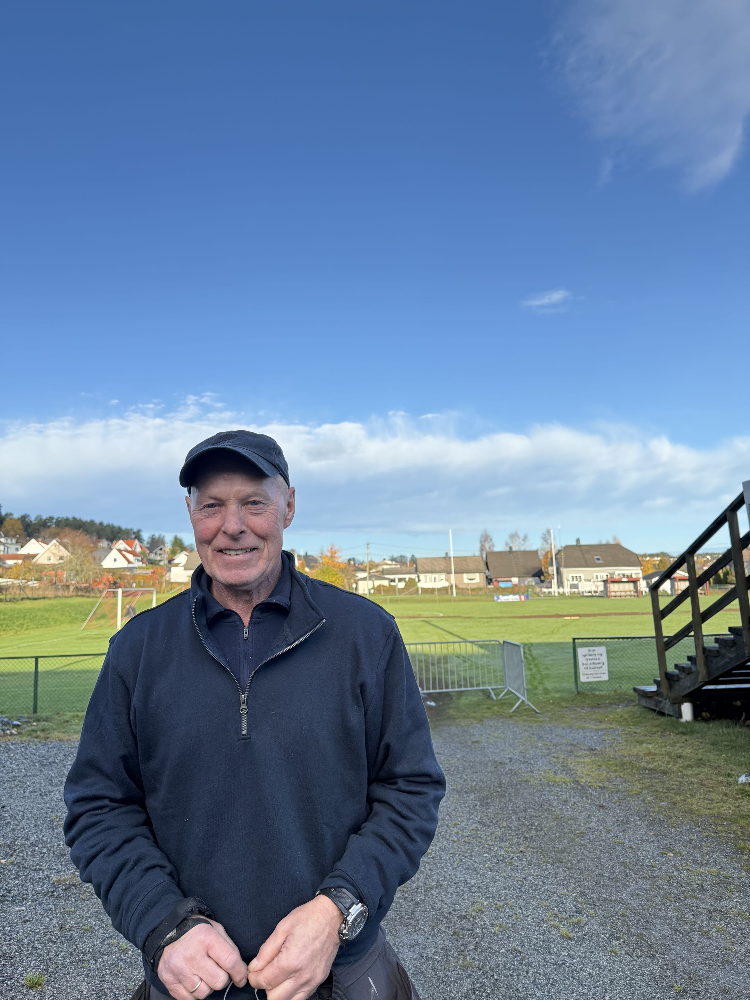
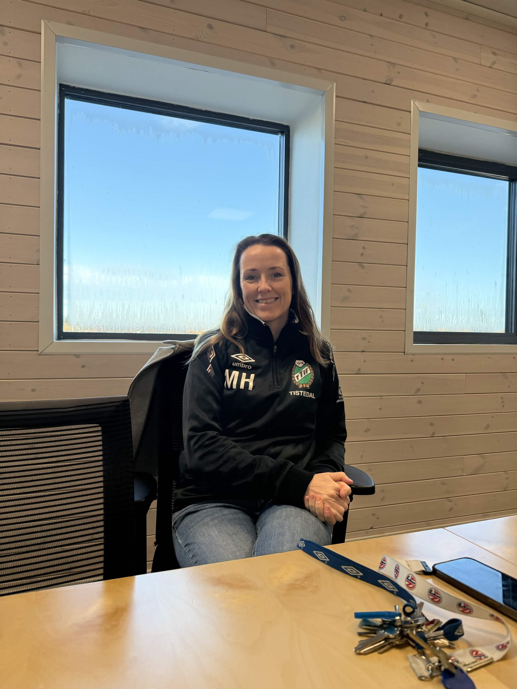
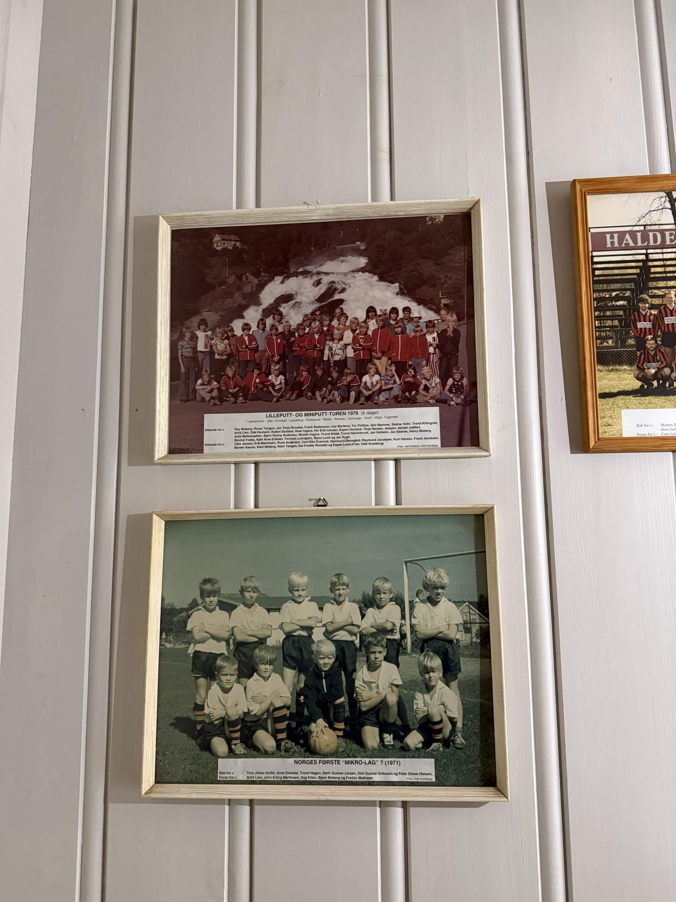
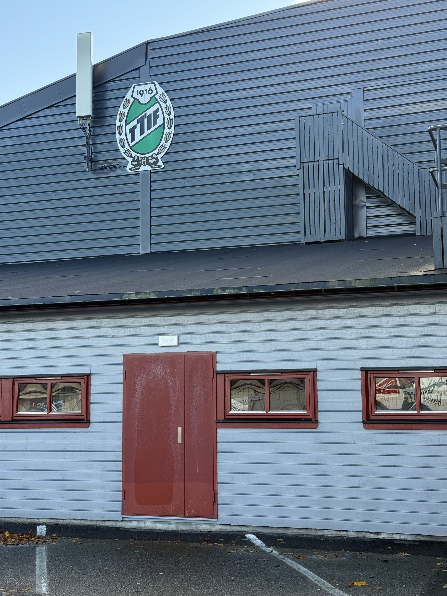
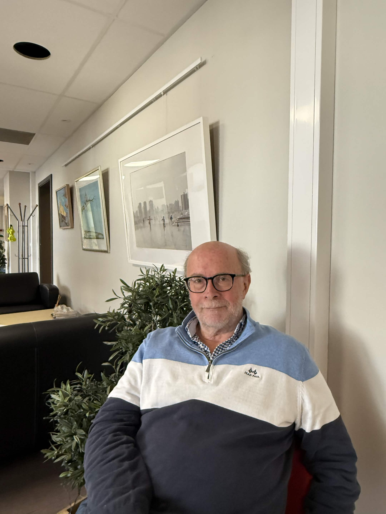

To steiner markerte målet. Et veikryss kunne være fotballbane, og kom det en bil, stoppet kampen til veien var fri. Slik husker Kai Henning Melber oppveksten i Halden. Ingen hadde satt opp en trening, og ingen trengte å være medlem i en klubb. Det holdt å finne noen å spille med.

Men løkka var mer enn et sted å sparke fotball. Den var et samlingspunkt der barn knyttet vennskap, kranglet, fant på regler og lærte å være sammen. I dag finnes det langt flere organiserte idrettstilbud og bedre baner. Samtidig forteller flere som kjenner fotballmiljøet i Halden, at den spontane aktiviteten har endret karakter.
Fra barndommens grusbane til dagens stadion
For Dag Morten, som i dag er vaktmester på uteanlegget ved Tistedalen stadion, begynte fotballgleden rett utenfor barndomshjemmet. Han vokste opp like ved stadion, og etter skolen samlet ungene i nabolaget seg på grusbanen.
Det var ingen trener som bestemte øvelsene, og lite fokus på teknikk. Ungene fant en ball, valgte lag og spilte utover ettermiddagen. Kampene tok form etter hvem som møtte opp, og det viktigste var å få spille.

Melber forteller om noe lignende. Fra han var liten og fram til tidlig i tenårene, spilte han fotball sammen med barna i nabolaget. De laget mål av det de fant, gjerne to steiner. Fotballsko og drakter var ikke nødvendig. Når han i dag besøker området der de spilte, ser han ikke lenger barn som bruker veikrysset som bane.
Det var heller ikke bare fotball på disse møteplassene. Melber husker «boksen går», klinkekuler og andre leker. Løkka var en del av et nærmiljø der barna oppsøkte hverandre, gjerne ved å ringe på døra, og fant ut hva dagen skulle inneholde.
Den frie fotballen var heller ikke bare for de yngste. Espen Bentsen Sørås forteller at Halden tidligere hadde gatelag som møttes til turneringer på stadion. Her kunne ungdommer og voksne spille på tvers av alder. Det viser at løkka ikke bare var trening før man begynte i klubb, men en egen måte å være sammen på. I en tid med egne lag for hvert årskull er dette en forskjell som er lett å overse.
Ikke alle ble valgt på løkka
Selv om mange forbinder løkkefotballen med frihet og fellesskap, var den ikke nødvendigvis like inkluderende for alle. Dag Morten husker godt hvordan de beste spillerne gjerne fikk velge lag først, mens de svakeste kunne bli stående igjen.
Melber kjenner seg igjen. Han forteller at han nesten alltid ble valgt sist, og at det ikke var noen god følelse. Han var god i svømming og hadde dermed en annen idrett å oppleve mestring i. Men han tror det kunne vært vanskeligere uten den tryggheten.
Samtidig mener Dag Morten at klubbfotballen har utviklet seg positivt. I dag lærer barn mer teknikk fra de er små, og det legges større vekt på at alle skal få mulighet til å delta. For ham er ikke fortiden noe man ukritisk skal ønske seg tilbake til.
Kontrasten er viktig: Løkka var tilgjengelig uten kontingent eller treningsplan, men barna måtte selv håndtere både laguttak og utestenging. Organisert fotball stiller flere krav, men kan også gi tryggere rammer for dem som ellers havner utenfor.
«Ting er mye mer organisert»
Mari Haugesten, som leder fotballavdelingen i Tistedalens Turn- og Idrettsforening (TTIF), kjenner igjen endringene. Klubben rekrutterer barn allerede fra femårsalderen, og mange får sine første fotballopplevelser gjennom faste treninger.
Hun beskriver en hverdag der barn og foreldre har mer planlagte aktiviteter enn tidligere. Når mye av fritiden er fylt av trening, skole og andre tilbud, kan det være vanskeligere å samle venner til fotball helt spontant.



Men Haugesten ser også en utfordring når idretten blir for alvorlig. Noen ungdommer slutter fordi de opplever fotballen som for seriøs eller for organisert. Derfor mener hun det er viktig å ta vare på muligheten til å spille bare for moro skyld.
TTIF omtaler seg som en breddeklubb. Det skal være mulig å delta på én trening i uka selv om laget trener tre ganger. For eldre ungdommer kan treningsmengden påvirke spilletiden i kamper, men målet er å gi plass til ulike ambisjoner.
Samtidig er klubbens baner åpne for fri bruk når det ikke foregår organisert aktivitet. Likevel ser Haugesten sjelden store grupper som spiller på egen hånd i helgene. Tilbudet om fri fotball finnes altså, men blir ikke alltid brukt slik det kanskje ble før.
Løkkefotballen har flyttet på seg
Espen Bentsen Sørås har fulgt utviklingen i idretts- og kulturlivet gjennom mange år, blant annet som kultursjef i flere kommuner. Han har bodd i Halden i 37 år og mener at den tradisjonelle løkkefotballen har mistet mye av plassen den tidligere hadde.
Men det betyr ikke at uorganisert fotball er borte. Sørås peker på skolegårder, ballbinger og åpne idrettsanlegg, der barn fortsatt møtes uten trenere eller faste kamptider. Han nevner blant annet Låby skole og fotballanleggene ved Strupe og Berg.

Også Melber har lagt merke til ungdommer som spiller på kunstgressbanene ved Strupe. Han mener derfor at løkkefotballen kan ha flyttet seg fra veikryss og små grusplasser til steder som er bedre tilrettelagt for fotball.
Denne utviklingen har flere sider. Dagens baner har ordentlige mål og godt underlag, men de er også ofte knyttet til skoler eller klubber. Den frie fotballen eksisterer dermed side om side med den organiserte, og må noen steder vike når treningene begynner.
Sørås forteller dessuten om gamle lekeområder som har grodd igjen. Noen steder har mål råtnet og apparater rustet fordi barna i området har vokst opp og vedlikeholdet har stoppet. Andre steder har gamle flater blitt utviklet til moderne nærmiljøanlegg. Løkka er ikke alltid fysisk borte, men bruken og utformingen er forandret.
Mer enn en fotballkamp
Hvorfor er det viktig å bevare rommet for den frie fotballen? For Melber handler svaret først og fremst om det sosiale.
Han mener at det å møte andre ansikt til ansikt, bli invitert med ut og fungere i en gruppe var en sentral del av oppveksten. Barna måtte finne ut av uenigheter selv, enten de handlet om mål, regler eller hvem som skulle spille på lag.
Sørås trekker fram noe av det samme. Når barn organiserer leken selv, lager de også sine egne regler. De blir enige om banens grenser og hvordan spillet skal fungere. Dermed lærer de mer enn å sentre og skyte.
Samtidig er det for enkelt å skylde endringene bare på skjermer. Både Sørås og Haugesten peker på en bredere samfunnsutvikling med mer organisert fritid, flere aktivitetstilbud og foreldre som i større grad følger opp hvor barna er og hva de gjør. Digitale medier kan være en del av forklaringen, men ingen av dem hevder å ha ett svar.
Hva skjer videre?
Løkkefotballen kostet ingenting når noen hadde en ball og et sted å spille. Klubbfotball kan derimot medføre kontingent og andre utgifter. I intervjuet på TTIF blir det understreket at klubben har støtteordninger for familier som trenger det, men at det kan være vanskelig å ta det første steget og spørre om hjelp.
Det gjør åpne og gratis møteplasser viktige også i dag. Ikke alle ønsker faste treninger eller kamper hver helg. Noen vil bare spille når de har tid, sammen med dem som dukker opp.
Sørås mener samfunnet fortsatt må legge til rette for slik aktivitet, selv om den kanskje får en annen form enn tidligere. Han peker på hvor lite som egentlig skal til for å spille fotball: Man trenger ikke elleve spillere, bare noen mennesker, en ball og noe som kan fungere som mål.
For Dag Morten handler utviklingen også om at alle skal få være med. Haugesten vil beholde gleden i en mer organisert fotballhverdag. Melber savner den spontane møteplassen, men ser at den frie fotballen fortsatt lever på nye baner.
Kanskje handler framtidens løkkefotball derfor ikke om å få tilbake hvert eneste grusfelt. Den handler om å bevare muligheten til å møte opp uten påmelding, lage en kamp sammen og kjenne at man hører til.
To steiner kan fortsatt være et mål. Det avgjørende er at det finnes et sted å legge dem - og noen å spille med.